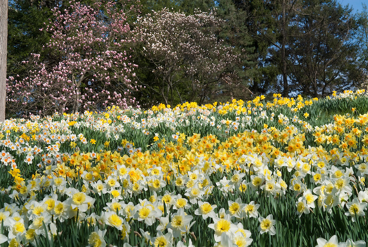

I wandered lonely as a cloud
That floats on high o'er vales and hills,
When all at once I saw a crowd,
A host, of golden daffodils;
Beside the lake, beneath the trees,
Fluttering and dancing in the breeze.
Continuous as the stars that shine
And twinkle on the milky way,
They stretched in never-ending line
Along the margin of a bay:
Ten thousand saw I at a glance,
Tossing their heads in sprightly dance.
The waves beside them danced; but they
Outdid the sparkling waves in glee:
A poet could not but be gay,
In such a jocund company:
I gazed—and gazed—but little thought
What wealth the show to me had brought:
For oft, when on my couch I lie
In vacant or in pensive mood,
They flash upon that inward eye
Which is the bliss of solitude;
And then my heart with pleasure fills,
And dances with the daffodils.